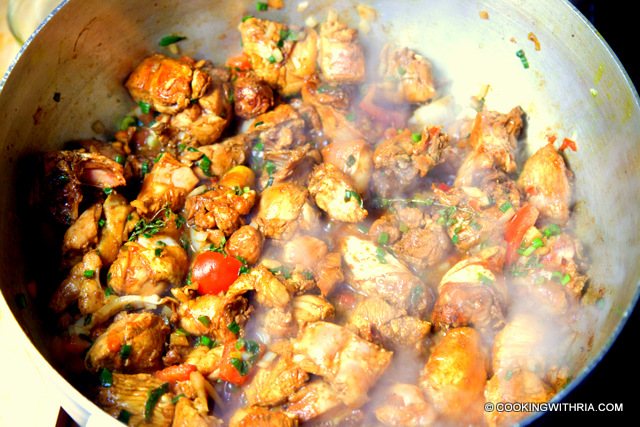

Stew Chicken

Description
Not as complicated as it looks.This version only looks difficult because I tried to explain the technique carefully for first time makers of this dish.
There is another recipe posted for this, but I feel it is too vague. This is the first meat dish that I learned to cook at age 12, so it's not that hard.
You can do the exact same thing with cubes of beef, pork, lamb or oxtail. What's with all the optional ingredients you ask? Well traditionally all the
ingredients listed are used but who isn't watching their salt and fat intake these days? If I am cooking this for guests, I use the optional
ingredients but even then I use low salt versions of the sauces and check with my guests first for dietary restrictions. Either way it's great
Ingredients
- 3 lbs chicken pieces
- li2 -3 garlic cloves, finely chopped (garlic powder does not work for this recipe because it burns and turns bitter)
- 1 teaspoon salt
- 2 tablespoons oil
- 3 tablespoons brown sugar
- 1 maggi chicken bouillon cube, and 2 cups water (or 2 cups chicken broth)
- 1 teaspoon hot pepper sauce (DO NOT use tabasco sauce. Any hot or mild Caribbean pepper sauce is fine.) (optional)
- 1 tablespoon golden ray cooking margarine (optional)
- 1 tablespoon coconut cream (optional)
- 1 tomatoes, rough chopped (optional)
- 1 tablespoon Angostura bitters (optional)
- 1 tablespoon Worcestershire sauce (optional)
- GREEN SEASONING MARINADE (USE 5 TBSP)
- 4 bunches chives
- 4 bunches spanish thyme
- 4 bunches French thyme
- 1 bunch fresh culantro (substitute 2 bunches cilantro)
- 10 pimento pepper (seeded)
- 4 stalks celery & leaves (I refer here to a local celery which is smaller and more pungent than the North American kind. Subst)
Directions
- Put all the seasoning ingredients into your blender or food processor and process dry or with a minimum amount of water. Store in the fridge, in a glass jar, for up to a week. Or add some more water and some vinegar if you want to keep it longer. Sorry I can't offer definite measurements. I usually just eyeball this.
- Trinidadians use this all purpose mix to season just about any kind of meat. It keeps well in the fridge and we usually make a fresh batch of this once a week
- Season chicken with Angustora bitters, green seasoning, salt and black pepper and leave to marinate in the fridge for 1/2 hour or longer if you have the time.
- Heat oil in a heavy pot, add sugar and garlic and let caramelize. Stir once or twice so that the garlic doesn't burn.
- The sugar will go from the colour of peanut butter to a bubbling, dark, reddish brown. When the outer edges start to turn an even darker brown , add all the chicken to the pot.
- Do not stir. Let the water generated by the addtion of the chicken dry out some and give chicken a chance to caramelize. Turn chicken and let rest again for the other side to caramelize. Reapeat this process, turning chicken occasionally so that it browns on all sides. If the sauce at this point looks a little bit gooey you are on the right track. You may need to add a few tablespoons of water during this process if it seems that the sauce is drying out too quickly but keep it at this thickened stage until the chicken is brown. If your sauce is too thin and watery the chicken will not caramelize.
- TIP: It takes a while for the sugar to get to the dark colour you are looking for. Do not walk away while browning the sugar. Once brown you'd be surprised how quickly it goes to black leaving you with a bitter charred mess that dries hard and ruins your pot and your spoon:=)No this never happened to me before LOL.
- Don't rush this stage. Let the liquid dry out, turning chicken occasionally so that it browns on all sides. If water is added too soon the brown colour will wash right off. The chicken will be too pale.
- When chicken is nice and brown, add the Worcestershire sauce, the Maggi cube and 2 cups cup or more of water to cover the chicken or two cups of broth.
- Add hot pepper sauce; cover pot and bring to a boil. Remove the pot cover part of the way as you want the liquid to start drying up but not so quickly that the chicken doesn't have time to cook. If liquid dries out too quickly you can always add more water.
- Cook on medium heat until chicken is tender.
- Once the chicken is cooked, let liquid dry out until the sauce in the pot is no longer watery.
- Serve with hot rice, salad or vegetables.
- Variations: You can add a 1/4 cup pumpkin cut in small cubes after you brown the chicken if you want a slightly thicker sauce.